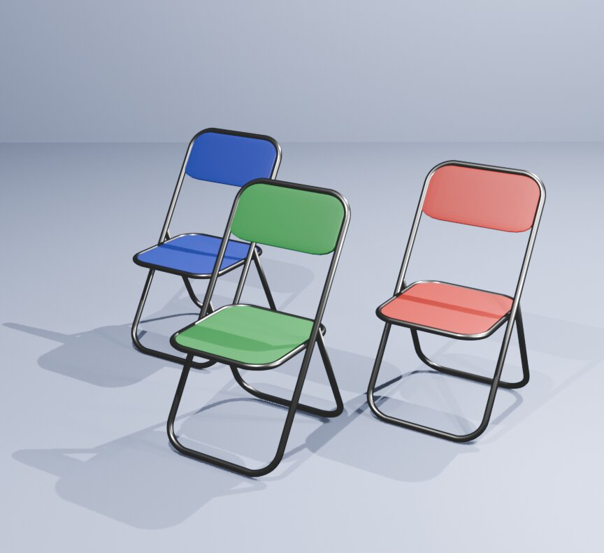
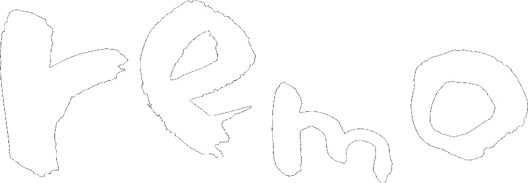
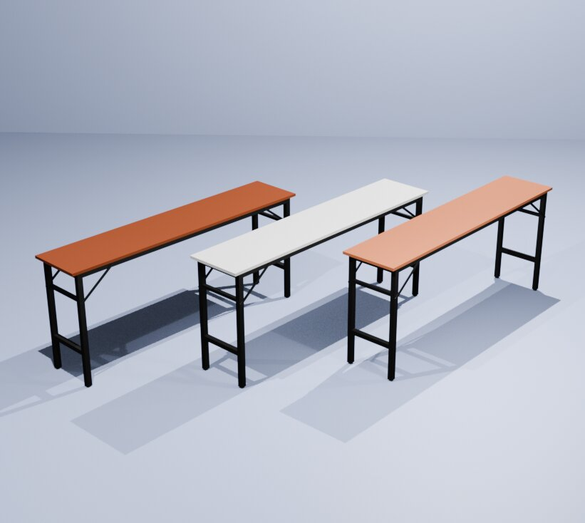
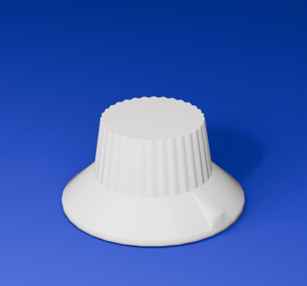
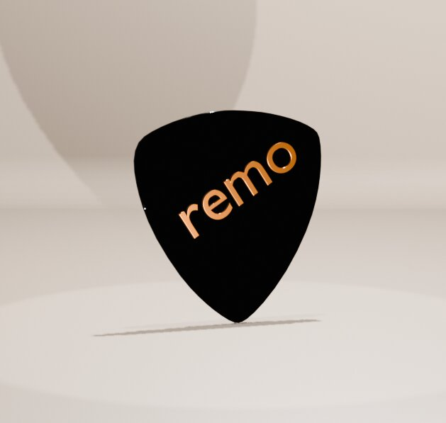
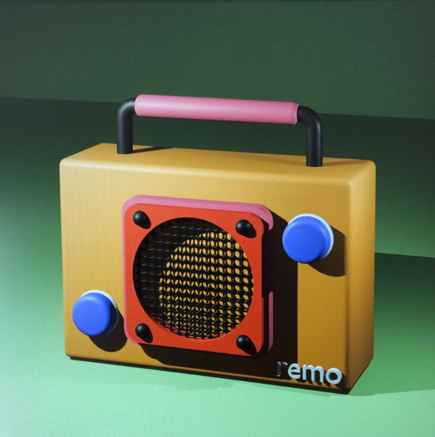
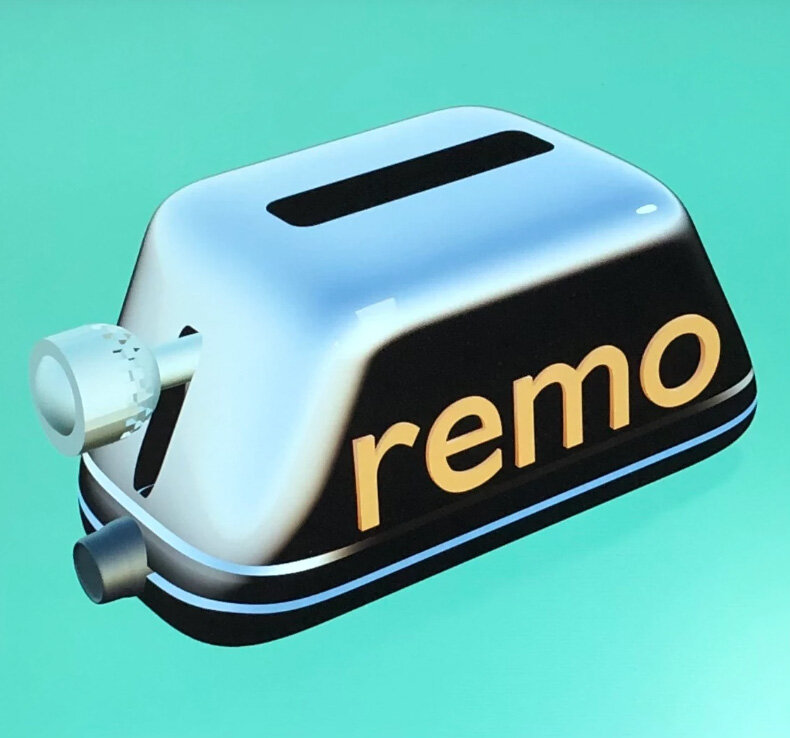
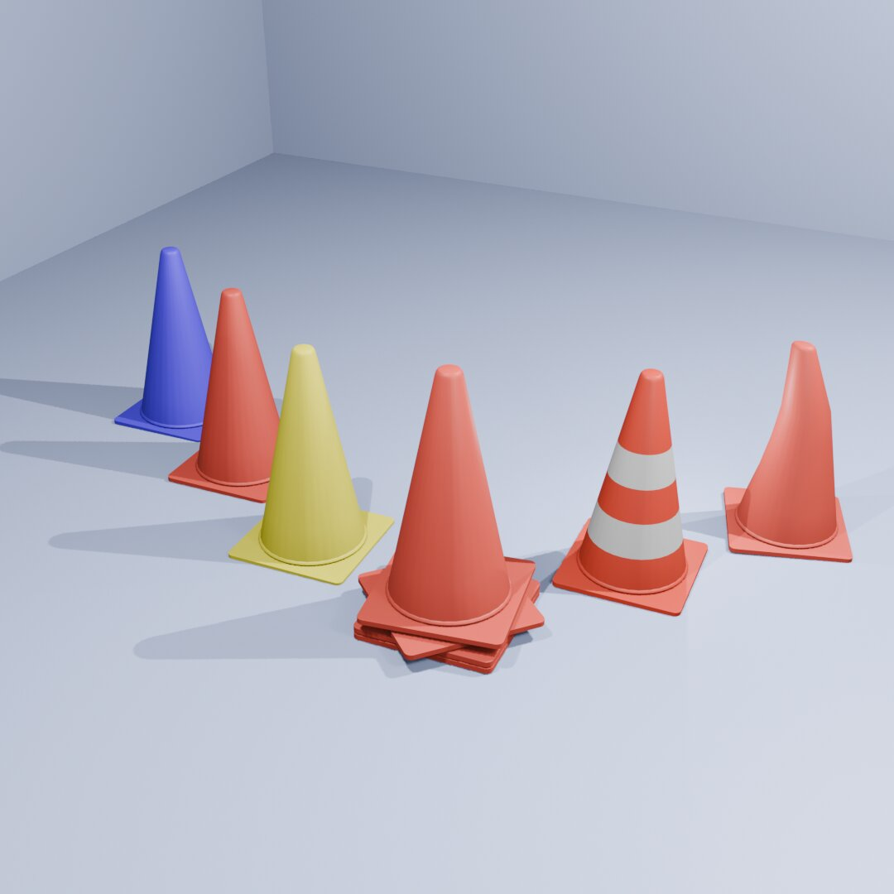

折りたたみ椅子(赤・緑・青)
量産品としての均一さと、色違いによる展開のしやすさを意識した一脚。

4F4F ― 3D MODELING
PRODUCTS & GAME ASSETS
実物への忠実な再現よりも、そのものが持つ「らしさ」を残すこと。ゲーム、映像、VR空間に置いたときに馴染むよう、あえて情報を削ぎ落とし、フォルムの気持ちよさを優先しています。企業ロゴやブランドマークをプロダクトに落とし込む対応も可能です。ローポリ・ゲームアセットとしての実装のしやすさも重視した制作です。

折りたたみ椅子(赤・緑・青)
量産品としての均一さと、色違いによる展開のしやすさを意識した一脚。

折りたたみロングテーブル
椅子と組み合わせて使える、会場設営を想定したセット構成。

ギターノブ
実在の質感を、ローポリでどこまで気持ちよく再現できるか。

ギターピック(remoロゴ入り)
実用小物にブランドの署名を刻む、遊び心のある一点。

ラジオ
レトロなプロダクトデザインを、あえて彩度高く再構築。

トースター
家電というモチーフに、ロゴを溶け込ませる試み。

カラーコーン(6色セット)
ゲーム背景に馴染む、量産アセットとしての実装。itch.ioでも販売中。
このジャンルのお問い合わせ・お仕事依頼は、件名にジャンルを記入の上、ここからお願いします。
お問い合わせする メールが開かない場合は、こちらへ直接お送りください:sun00shigeki@yahoo.co.jp